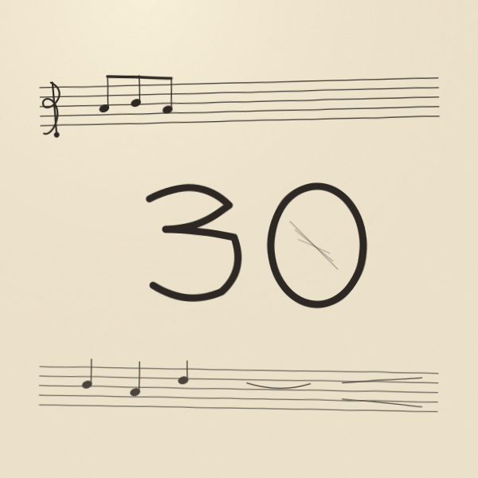

playlists · liner notes
Editorial playlists with liner notes, songwriter credits, and short profiles of the artists behind the songs.

A genre-spanning, opinionated mixtape that uses thirty songs to make a single argument about who American songwriting's greatest living practitioners are — and why their craft matters.